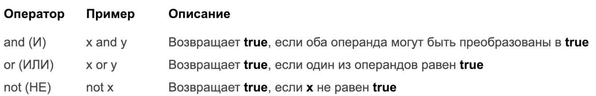

2 февраля 2019 в 10:14
Развёрнутое руководство по Sass/SCSS
247
Free Vector Design by: www.vecteezy.com
Современный CSS — мощь, а в комбинации с препроцессорами — вообще боевая машина для оформления контента на страницах. В статье приведено развёрнутое руководство по Sass/SCSS с примерами. После прочтения узнаете, как использовать миксины, переменные и директивы для ещё большего контроля над стилями.
Примечание Весь код Sass/SCSS компилируется в CSS, чтобы браузеры могли его понимать и корректно отображать. В настоящее время браузеры не поддерживают работу с Sass/SCSS или с любым другим препроцессором CSS напрямую, стандартная же спецификация CSS не предоставляет аналогичную функциональность.
Содержание статьи
Зачем использовать Sass/SCSS вместо CSS?
Статья по теме: Функциональный CSS: упрощаем работу со стилями
Sass не динамичен. У вас не получится генерировать и/или анимировать CSS-свойства и значения в реальном времени. Но можно их создавать более эффективным способом и позволить стандартным свойствам (вроде анимации на CSS) заимствовать их оттуда.
SCSS особо не добавляет никаких новых возможностей CSS, кроме нового синтаксиса, часто сокращающего время написания кода.
Существует 5 CSS-препроцессоров: Sass, SCSS, Less, Stylus и PostCSS.
Эта статья по большей части охватывает SCSS, который похож на Sass. Детальнее об этих препроцессорах можете прочитать на Stack Overflow (оригинал) или на qaru (перевод на русский).
SASS — (.sass) Syntactically Awesome Style Sheets.
Белкасофт, Удалённо, По итогам собеседования
SCSS — (.scss) Sassy Cascading Style Sheets.
Расширения .sass и .scss похожи, но всё-таки не одинаковы. Для фанатов командной строки приводим способ конвертации:
# Конвертация из Sass в SCSS
$ sass-convert style.sass style.css
# Конвертация из SCSS в Sass
$ sass-convert style.scss style.sass
Sass — первая спецификация для SCSS с расширением файла .sass. Её разработка началась ещё в 2006 году, но позже был разработан альтернативный синтаксис с расширением .scss.
Обратите внимание Другие препроцессоры функциональностью похожи на SCSS, но синтаксис может отличаться. А ещё, всё то, что работает в CSS, будет также прекрасно воспроизводиться и в Sass, и в SCSS.
Sass/SCSS позволяет работать с переменными. В CSS они обозначаются двойным тире (--), а в препроцессорах знаком доллара ($).
$number: 1;
$color: #ff0000;
$text: "tproger forever.";
$text: "IT forever." !default;
$nothing: null;
Вы можете присваивать значение по умолчанию переменным, у которых ещё нет значения, добавив метку !default в конце значения. В таком случае, если переменной уже было присвоено значение, оно не изменится; если же переменная пуста, ей будет присвоено новое указанное значение.
#container {
content: $text;
}
Переменные в Sass могут быть присвоены любому свойству.
Стандартные вложенные CSS-элементы с использованием пробела:
/* Вложенные правила */
#A {
color: red;
}
#A #B {
color: green;
}
#A #B #C p {
color: blue;
}
Те же вложенные элементы с помощью SCSS:
/* Вложенные правила */
#A {
color: red;
#B {
color: green;
#C p {
color: blue;
}
}
}
Как видно, синтаксис выглядит более чистым и менее повторяющимся.
Это особенно полезно при управлении перегруженными макетами. Таким образом, выравнивание, в котором вложенные свойства записаны в коде, полностью соответствует действительной структуре макета приложения.
За кулисами препроцессор всё ещё компилирует его в стандартный код CSS (показано выше), чтобы он мог быть отображён в браузере. Мы лишь изменяем способ написания CSS.
В SCSS используется директива &.
#p {
color: black;
a {
font-weight: bold;
&:hover {
color: red;
}
}
}
С помощью символа & вы можете явно указать, где должен быть вставлен родительский селектор.
Результат компиляции Sass (из предыдущего примера) в CSS ниже.
#p {color: black;}
#p a {font-weight: bold;}
#p a:hover {color: red;}
В итоге амперсанд был компилирован в название родительского элемента a (a:hover).
Миксины объявляются директивой @mixin. После неё должно стоять имя миксина и, опционально, его параметры, а также блок, содержащий тело миксина. Например, можно определить миксин flexible(), который далее будет включён, например, в класс .centered-elements следующим образом:
@mixin flexible () {
display: flex;
justify-content: center;
align-items: center;
}
.centered-elements {
@include flexible ();
border: 1px solid gray;
}
Теперь каждый раз после применения класса .centered-elements к HTML-элементу, последний будет преобразован во Flexbox.
Миксины могут также содержать селекторы, в том числе со свойствами. А селекторы могут содержать ссылки на родительский элемент через амперсанд (&), вы ведь помните про него?
Пример работы с несколькими браузерами
Некоторые вещи в CSS весьма утомительно писать, особенно в CSS3, где плюс ко всему зачастую требуется использовать большое количество вендорных префиксов( -webkit- или -moz-).
Миксины позволяют создавать группы деклараций CSS, которые вам придётся использовать несколько раз на сайте. Хорошей практикой будет использование миксинов для вендорных префиксов. Пример:
@mixin border-radius($radius) { // Префиксы для:
-webkit-border-radius: $radius; // Chrome и Safari
-moz-border-radius: $radius; // Firefox
-ms-border-radius: $radius; // Internet Explorer
-o-border-radius: $radius; // Opera
border-radius: $radius; // Стандартный CSS
}
// Пример использования миксина border-radius после его создания
.box { @include border-radius(10px); }
Как и в реальной жизни, вы не можете работать с числами, у которых несовместимы типы данных (например, сложение рх и em).
p {
font-size: 10px + 2em; // ОШИБКА!
font-size: 10px + 6px; // 16px
font-size: 10px + 2; // 12px
}
Всегда обращайте внимание на тип складываемых данных. То есть пиксели к пикселям, слоны к слонам. Таким же образом работает вычитание, но со знаком минус.
Пример вычитания:
div {
height: 12% - 2%;
margin: 4rem - 1;
}
Выполняется точно так же, как в CSS, с помощью calc(a * b), но без calc и круглых скобок. Кроме того, можно ещё отделять знак умножения пробелами от чисел (5*6 == 5 * 6).
Исключение Нельзя умножать пиксели между собой. То есть, 10px * 10px != 100px. 10px * 10 == 100px.
p {
width: 10px * 10px; // ОШИБКА!
width: 10px * 10; // 100px
width: 1px * 5 + 5px; // 10px
width: 5 * (5px + 5px); // 50px
width: 5px + (10px / 2) * 3; // 20px
}
С делением дела обстоят немного сложнее, но разобраться можно, ведь в стандартном CSS косая линия (слэш) зарезервирована для использования краткой формы записи свойств. Пример ниже.
/* краткая форма записи свойств */
font: italic bold .8em/1.2 Arial, sans-serif;
/* стандартная форма записи свойств */
font-style: italic;
font-weight: bold;
font-size: .8em;
line-height: 1.2;
font-family: Arial, sans-serif;
Есть три помощника, которые намекнут на возможность деления:
Пример:
$var1: 20;
$var2: 4;
p {
top: 16px / 24px; // Отображается без изменений в стандартном CSS
top: (20px / 5px); // Производится деление (но только при использовании скобок)
top: #{$var1} / #{$var2}; // Выводится как обычный CSS-код, деление не выполняется
top: $var1 / $var2; // Деление выполняется
top: random(4) / 5; // Деление выполняется (если использовать в паре с функцией)
top: 2px / 4px + 3px; // Деление выполняется, если добавлена ещё одно арифметическое действие
}
Результат компиляции в CSS:
p {
top: 16px / 24px;
top: 4;
top: 20 / 4;
top: 5;
top: 0.6;
top: 3.5px;
}
Остаток вычисляет остаток от операции деления. Ниже рассмотрим, как создать «зебру» для HTML-списка.
@mixin zebra() {
@for $i from 1 through 7 {
@if ($i % 2 == 1) {
.stripe-#{$i} {
background-color: black;
color: white;
}
}
}
}
* {
@include zebra();
text-align: center;
}
Создание миксина zebra показано во вставке кода сверху. Директивы @for и @if описаны в секции ниже.
Для создания образца надо написать несколько HTML-элементов.
<div class="stripe-1">zebra</div>
<div class="stripe-2">zebra</div>
<div class="stripe-3">zebra</div>
<div class="stripe-4">zebra</div>
<div class="stripe-5">zebra</div>
<div class="stripe-6">zebra</div>
<div class="stripe-7">zebra</div>
Результат в браузере:
Зебра успешно сгенерирована миксином zebra
Директива @if принимает выражение SassScript и использует вложенные в неё стили в случае, если выражение возвращает любое значение, кроме false или null.
Ниже показано, как работают директивы @if и @else, вложенные в миксин.
@mixin spacing($padding, $margin) {
@if ($padding > $margin) {
padding: $padding;
} @else {
padding: $margin;
}
}
.container {
@include spacing(10px, 20px);
}
Сравнение в действии. Миксин spacing выберет размеры padding’а, если тот будет больше, чем margin.
После компиляции в CSS:
.container { padding: 20px; }

Описание логических операторов
Использование логических операторов Sass для создания кнопки, у которой будет меняться фон в зависимости от её ширины.
@mixin button-color ($height, $width) {
@if (($height < $width) and ($width >= 35px)) {
background-color: blue;
} @else {
background-color: green;
}
}
.button {
@include button-color(20px, 30px)
}
В CSS определено 2 типа строк: с кавычками и без. Sass распознаёт и то, и другое. В итоге вы получите в CSS тот тип строк, который использовали в Sass.
В некоторых случаях можно добавить строки в допустимые значения CSS без кавычек, но только если добавленная строка является завершающим элементом.
p {
font: 50px Ari + "al"; // Компилируется в 50px Arial
}
Пример ниже демонстрирует, как делать не надо.
p {
font: "50px" + Arial; // ОШИБКА!
}
Можете складывать строки разных типов, если в них нет пробелов. Пример ниже не будет скомпилирован.
p:after {
content: "Верните Линуса " + Торвальдса!; // ОШИБКА!
}
Строки, содержащие пробелы, должны быть отделены кавычками. Решение проблемы:
p:after {
content: "Верните Линуса " + "Торвальдса!"; // обратите внимание на "Торвальдса!"
}
Пример сложения нескольких строк:
p:after {
content: "Удел " + "человечества " + "—" + "итерация.";
}
Сложение строк и чисел:
p:after {
content: "Рекурсия " + 2013 + " удел небожителей";
}
Обратите внимание Свойство content работает только с псевдоселекторами :before и :after. Рекомендуется не использовать content в CSS-документе, а напрямую использовать его между тегами в HTML.
В SCSS есть функции (function()) и директивы (@directive). Чуть выше мы уже рассматривали пример функции, когда изучали передачу аргументов внутри миксинов.
Функции обычно заключаются в скобки, следующие сразу за её именем. А директива начинается с символа @.
Подобно JavaScript, SCSS позволяет работать со стандартным набором операторов управления потоками.
if() — это функция (и иногда основа искусственного интеллекта).
Её использование выглядит довольно примитивным: оператор вернёт одно из двух обозначенных в условии значений.
/* Использование функции if() */
if (true, 1px, 2px) => 1px;
if (false, 1px, 2px) => 2px;
@if — это директива, использующаяся для разветвления на основе условия.
/* Использование директивы @if */
p {
@if 1 + 1 == 2 { border: 1px solid; }
@if 7 < 5 { border: 2px dotted; }
@if null { border: 3px double; }
}
Результат компиляции:
p { border: 1px solid; }
Ниже показано комбо-разветвление с добавлением директивы @else.
/* Создание переменной $type */
$type: river;
/* Окрашивание контейнеров в синий в случае, если значение для переменной $type — river */
div {
@if $type == river {
color: blue;
}
}
/* Условные цвета для текста в теге <p> */
p {
@if $type == tree {
color: green;
} @else if $type == river {
color: blue;
} @else if $type == dirt {
color: brown;
}
}
Проверка на наличие родительского элемента
Амперсанд выбирает родительский элемент, если тот существует. В ином случае вернёт null. Поэтому может использоваться совместно с директивой @if.
В следующих примерах рассмотрим создание условных CSS-стилей в зависимости от наличия родительского элемента.
/* Проверка на наличие родительского элемента */
@mixin does-parent-exist {
@if & {
/* Применение голубого цвета родительскому элементу, если он существует */
&:hover {
color: blue;
}
} @else {
/* Родительский элемент отсутствует, применение голубого цвета к ссылкам */
a {
color: blue;
}
}
}
Директива @for выводит набор стилей заданное число раз. Для каждого повторения используется переменная-счётчик для изменения вывода.
Директива @for итерируется 5 раз.
@for $i from 1 through 5 {
.definition-#{$i} { width: 10px * $i; }
}
Результат компиляции в CSS:
.definition-1 { width: 10px; }
.definition-2 { width: 20px; }
.definition-3 { width: 30px; }
.definition-4 { width: 40px; }
.definition-5 { width: 50px; }
Директива @each устанавливает $var в каждое из значений списка или словаря и выводит содержащиеся в ней стили, используя соответствующее значение $var.
@each $animal in platypus, lion, sheep, dove {
.#{$animal}-icon {
background-image: url("/images/#{$animal}.png")
}
}
Результат компиляции в CSS:
.platypus-icon {
background-image: url("/images/platypus.png");
}
.lion-icon {
background-image: url("/images/lion.png");
}
.sheep-icon {
background-image: url("/images/sheep.png");
}
.dove-icon {
background-image: url("/images/dove.png");
}
Директива @while принимает выражение SassScript и циклично выводит вложенные в неё стили, пока выражение вычисляется как true. Она может быть использована для создания более сложных циклов, чем таких, для которых подходит @for, хотя она бывает необходима довольно редко. Например:
$index: 5;
@while $index > 0 {
.element-#{$index} { width: 10px * $index; }
$index: $index - 1;
}
Результат компиляции:
.element-5 { width: 50px; }
.element-4 { width: 40px; }
.element-3 { width: 30px; }
.element-2 { width: 20px; }
.element-1 { width: 10px; }
Используя Sass/SCSS можно использовать функции так же, как и в других языках.
Создадим функцию three-hundred-px(), возвращающую 300px.
@function three-hundred-px() {
@return 300px;
}
.name {
width: three-hundred-px();
border: 1px solid gray;
display: block;
position: absolute;
}
После применения класса .name ширина элемента будет равна 300 пикселям.
<div class = "name">Hello.</div>
Результат в браузере:
Функции в Sass могут возвращать любое корректное значение CSS и могут быть назначены любому свойству. Они даже могут быть рассчитаны на основе переданного аргумента.
@function double($width) {
@return $width * 2;
}
Тригонометрические функции sin() и cos() часто встречаются в виде встроенных классов во многих языках, таких как JavaScript, например.
Их работу стоит изучать, если нужно сократить время, затрачиваемое на разработку анимаций пользовательского интерфейса, например для создания троббера. Мы, кстати, уже говорили об этом в одной из статей. Но в данном случае это будет код, а не gif-картинка, вставленная в HTML-документ.
Ниже рассмотрим пару примеров для создания интересных анимационных эффектов с помощью функции sin(), в которых количество кода сведено к минимуму. Далее можете масштабировать эти знания на создание интерактивных элементов пользовательского интерфейса (движение по кругу, волнистая анимация).
Преимущество использования тригонометрии в сочетании с CSS выражается в отсутствии дополнительных HTTP-запросов, как это происходит с gif-изображениями.
Можно писать тригонометрические функции на Sass. Об этом читайте далее.
В тригонометрии многие операции основаны на функциях. Каждая функция строится на основе другой. Например, функция rad() требует использования PI(). Функции cos() и sin() требуют использование rad().
@function PI() { @return 3.14159265359; }
Написание функций на Sass/SCSS очень похоже на написание функций в других языках.
Использование функции pow():
@function pow ($number, $exp) {
$value: 1;
@if $exp > 0 {
@for $i from 1 through $exp {
$value: $value * $number;
}
}
@else if $exp < 0 {
@for $i from 1 through -$exp {
$value: $value / $number;
}
}
@return $value;
}
Использование функции rad():
@function rad ($angle) {
$unit: unit ($angle);
$unitless: $angle / ($angle *0 + 1);
//Если значение angle (угла) указано в градусах ('deg'), нужно конвертировать его в радианы.
@if $unit == deg {
$unitless: $unitless / 180 * PI();
}
@return $unitless;
}
Для вычисления тангенса функцией tan() нужно применить функции sin() и cos().
Пример:
@function tan($angle) {
@return sin($angle) / cos($angle);
}
Как видите, CSS уже достаточно эволюционировал, чтобы порой заменять JavaScript. Это упрощает работу и экономит время. Кстати, загляните в одну из наших статей, в которой описаны возможности современного CSS.
Но если написание математических функций самостоятельно (да ещё и на CSS) не вдохновляет вас на работу, а старый добрый JavaScript ближе и привычнее вашему сердцу и глазу, то можете просто использовать библиотеку Anime.js, принцип работы которой подробно описан в четырёх статьях: часть 1, часть 2, часть 3, часть 4.
Перевод статьи «The Complete Guide To SCSS/SASS»
CSS
�